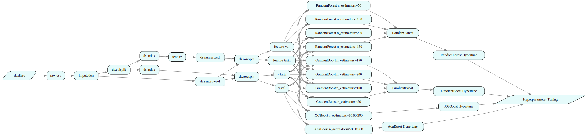

Tutorial 2: Machine Learning
How to use this tutorial
- Select "run all cells" on this notebook from the Run menu in Jupyter notebook or Jupyter
lab. This step will produce intermediate data output and charts.
- Some cells print out a url, which you can click on and bring up an interactive web UI to visualize the graph data.
- In the unlikely event that the notebook becomes irresponsive, you can try "Restart Kernel" from the Kernel menu, then run individual cells one by one using
Shift+Enter. - Some tutorials use local clusters consisting of multiple processes to mimic the effects
of graph distribution over a remote clusters. By default, these local clusters automatically stop after idling for 15min to conserve CPU and memory resources. You will need to rerun the entire notebook if your local cluster stopped due to inactivity.
- Additional resources (video demos & blogs) are available at http://juliustech.co
- To report any issues, get help or request features, please raise an issue at:
https://github.com/JuliusTechCo/JuliusGraph/issues
Introduction
This Tutorial shows how to use Julius Graph Engine to set up the training and validation of a machine learning model. We implement the classic example of using several different ML models to predict (or postdict) the survival of Titanic passengers by using the well-known Titanic dataset.
Data Exploration, Visualization and Cleaning
Data scientits can use Julius Graph Engine to quickly explore and visualize data from different sources. Julius provides connections to many data sources and formats, such as CSV, web url, relational Databases, various NoSQL Databases, etc.
DataScience package is part of Julius distribution, it provides a rich set of rules and atoms for data sourcing, cleansing, and machine learning. In this notebook, we will show how the rules and atoms defined in DataScience to quickly build the ML pipeline for the Titanic data set.
The relevant rules from DataScience package for this tutorial are listed below for your reference.
@addrules ds begin
dfsrc(df::DataFrame) = DFSrc[df]()
colsel(r::NodeRef, idx::Vector{Int}) = Index[idx](r...)
csvsrc(filen::String, hashdr::Bool) = Alias(dfsrc(CSV.read(filen, DataFrame, header = hashdr)))
colsplit(ref::NodeRef, idx::Int, yhdr::Set{Symbol}, ex::Set{Symbol}) = ColSplit[idx, yhdr, ex](ref...)
trainvalsplit(ref::NodeRef, pctval::Float64) = RandRowSplit[pctval](ref...)
fillmissing(ref::NodeRef, methods::Dict{Symbol,Symbol}) = FillMissing[methods](ref...)
numerize(ref::NodeRef) = Numerize(ref...)
endWe first include the dependent Julia and Julius packages and set up some basic configurations.
using GraphEngine: RuleDSL, GraphVM
using Base.CoreLogging
using DataScience, AtomExt, GraphIO
using DataFrames
# turn off informational logging output
disable_logging(CoreLogging.Info)
# extend the number of displayed columns in Jupyter notebooks
ENV["COLUMNS"] = 100100# the project is used for web UI display
config = RuleDSL.Config(:project => "Titanic");
# start data server for web UI
gss = Dict{String,RuleDSL.AbstractGraphState}()
port = GraphVM.drawdataport()
@async GraphVM.startresponder(gss, port)Task (runnable) @0x00007f8e63e70d30The dataset can be loaded by either directly using a url or by providing a CSV source file via rules defined in the ds namespace, which are defined in the DataScience package. The line commented out is a rule to load the same data from a URL.
rawsrc = RuleDSL.@ref ds.csvsrc("../data/titanic.csv", true; label="raw csv")
# rawsrc = RuleDSL.@ref ds.urlsrc("https://raw.githubusercontent.com/agconti/kaggle-titanic/master/data/train.csv", true; label="raw url")ds:csvsrc/raw csvThe very first thing a data scientits may want to do is to get a summary of the dataset. The follow cell shows how it can be done using the ds.datasummary rule in the DataScience package.
rawsummary = RuleDSL.@ref ds.datasummary(rawsrc; label="data summary")
gs = GraphVM.createlocalgraph(config, RuleDSL.GenericData());
GraphVM.calcfwd!(gs, Set([rawsummary]))0The data summary results can be retrieved using the GraphVM.getdata method. The data cached in individual graph nodes are all vectors, the last argument 1 just refers to the first and only element of the data summary. Some nodes will have multiple entries in the data vector.
RuleDSL.getdata(gs, rawsummary, 1)12 rows × 7 columns
| variable | mean | min | median | max | nmissing | eltype | |
|---|---|---|---|---|---|---|---|
| Symbol | Union… | Any | Union… | Any | Int64 | Type | |
| 1 | PassengerId | 446.0 | 1 | 446.0 | 891 | 0 | Int64 |
| 2 | Survived | 0.383838 | 0 | 0.0 | 1 | 0 | Int64 |
| 3 | Pclass | 2.30864 | 1 | 3.0 | 3 | 0 | Int64 |
| 4 | Name | Abbing, Mr. Anthony | van Melkebeke, Mr. Philemon | 0 | String | ||
| 5 | Sex | female | male | 0 | String7 | ||
| 6 | Age | 29.6991 | 0.42 | 28.0 | 80.0 | 177 | Union{Missing, Float64} |
| 7 | SibSp | 0.523008 | 0 | 0.0 | 8 | 0 | Int64 |
| 8 | Parch | 0.381594 | 0 | 0.0 | 6 | 0 | Int64 |
| 9 | Ticket | 110152 | WE/P 5735 | 0 | String31 | ||
| 10 | Fare | 32.2042 | 0.0 | 14.4542 | 512.329 | 0 | Float64 |
| 11 | Cabin | A10 | T | 687 | Union{Missing, String15} | ||
| 12 | Embarked | C | S | 2 | Union{Missing, String1} |
We observe that some columns in the raw data set have missing values. Data imputation and cleansing is a common task for building ML models. Julius' DataScience library has provided data imputation methods, which can be easily used by calling the fillmissing rule with the desired imputation method for a each field, i.e., we use median value of Age of all passenger for any missing Age, and use the mode value (which is true) for any missing Embarked.
cleansrc = RuleDSL.@ref ds.fillmissing(
rawsrc, Dict(:Age => :median, :Embarked => :mode); label="impute missing"
)ds:fillmissing/impute missingAfter data imputation, we recompute the data summary, showing all the the missing values for both Age and Embarked features have been populated:
cleansummary = RuleDSL.@ref ds.datasummary(cleansrc; label="clean summary")
GraphVM.calcfwd!(gs, Set([cleansummary]))
RuleDSL.getdata(gs, cleansummary, 1)12 rows × 7 columns
| variable | mean | min | median | max | nmissing | eltype | |
|---|---|---|---|---|---|---|---|
| Symbol | Union… | Any | Union… | Any | Int64 | Type | |
| 1 | PassengerId | 446.0 | 1 | 446.0 | 891 | 0 | Int64 |
| 2 | Survived | 0.383838 | 0 | 0.0 | 1 | 0 | Int64 |
| 3 | Pclass | 2.30864 | 1 | 3.0 | 3 | 0 | Int64 |
| 4 | Name | Abbing, Mr. Anthony | van Melkebeke, Mr. Philemon | 0 | String | ||
| 5 | Sex | female | male | 0 | String7 | ||
| 6 | Age | 29.3616 | 0.42 | 28.0 | 80.0 | 0 | Float64 |
| 7 | SibSp | 0.523008 | 0 | 0.0 | 8 | 0 | Int64 |
| 8 | Parch | 0.381594 | 0 | 0.0 | 6 | 0 | Int64 |
| 9 | Ticket | 110152 | WE/P 5735 | 0 | String31 | ||
| 10 | Fare | 32.2042 | 0.0 | 14.4542 | 512.329 | 0 | Float64 |
| 11 | Cabin | A10 | T | 687 | Union{Missing, String15} | ||
| 12 | Embarked | C | S | 0 | String1 |
The entire data sourcing and cleansing can be visualized interactively in Julius convenient web UI by clicking the link below.
svg = GraphIO.postlocalgraph(gss, gs, port; key="data");
GraphIO.postsvg(svg, "titanic_1.svg")view graph data at http://127.0.0.1:8080/depgraph.html?dataurl=127.0.0.1:7577_data

Figure 1 - Data Cleansing
2. Experiment with multiple Machine Learning models
Julius Graph Engine can easily interop with existing Python, Java, C++ and R libraries via the generic Atom interface
For example, the following rules show how easy it is to access Python ML libraries, such as sklearn, by using the PyTrain atom provided in the DataScience package. The first parameter of the PyTrain atom is the full name of the Python ML class to use. The second parameter is a Dictionary with the corresponding parameters/options/arguments of that ML class.
@addrules ds begin
classifiertrain(model::Val{:SVC}, options::Dict, traindat::NodeRef) = PyTrain["sklearn.svm.SVC", options](traindat...)
classifiertrain(model::Val{:DecisionTree}, options::Dict, traindat::NodeRef) = PyTrain["sklearn.tree.DecisionTreeClassifier", options](traindat...)
classifiertrain(model::Val{:RandomForest}, options::Dict, traindat::NodeRef) = PyTrain["sklearn.ensemble.RandomForestClassifier", options](traindat...)
classifiertrain(model::Val{:AdaBoost}, options::Dict, traindat::NodeRef) = PyTrain["sklearn.ensemble.AdaBoostClassifier", options](traindat...)
classifiertrain(model::Val{:MLPC}, options::Dict, traindat::NodeRef) = PyTrain["sklearn.neural_network.MLPClassifier", options](traindat...)
classifiertrain(model::Val{:GaussianNB}, options::Dict, traindat::NodeRef) = PyTrain["sklearn.naive_bayes.GaussianNB", options](traindat...)
classifiertrain(model::Val{:XGBoost}, options::Dict, traindat::NodeRef) = PyTrain["xgboost.XGBClassifier", options](traindat...)
classifiertrain(model::Symbol, options::Dict, traindat::NodeRef; label = "$model-train") = Alias(classifiertrain(val(model), options, traindat))
endWe now proceed to train multiple ML models and compare their in-sample and out-sample performance using metrics, such as Gini. The ML models are trained to predict the survival probability of Titanic passengers. We first define the list of models we want to compare and their hyperparameters.
models = [
:DecisionTree => Dict(:min_samples_leaf => 0.1),
:LogisticRegression => Dict(:solver => "saga", :max_iter => 200),
:AdaBoost => Dict(),
:XGBoost => Dict(),
:GradientBoost => Dict(:min_samples_leaf => 0.1),
:RandomForest => Dict(:min_samples_leaf => 0.1),
:GaussianNB => Dict(),
];The target variable name for ML prediction is given below.
yname = :Survived;To divide the input dataset for training and validation, we use the randrowsel rule from the DataScience package. The resulting node valind contains a DataFrame with a validation index column of Vector{Bool} type that randomly indicates wether a row is used for training or validation. The 1/3 is the percentage of rows that will be reserved for validation.
valind = RuleDSL.@ref ds.randrowsel(cleansrc, 1 / 3);Feature engineering is also supported generically by a rule in DataScience package. A feature set is defined by a 3-element Tuple, including the name of the feature set, a Julia Expr providing the transformations for additional features and lastly, the columns to be dropped from the feature set. In this particular case, we only drop some columns that should have no association with a passenger's suvival probability such as Ticket Id and passenger' name and Ids. The Cabin is dropped from the feature set because it has too many missing values.
# definition of feature engineering: (name, transformations, drop columns)
features = (
:Original,
quote end,
[:Cabin, :Ticket, :PassengerId, :Name],
);Note that quote end is just an empty Expr that does not create additional features from the original data set.
DataScience.ClassifierSpec is a struct that contains all the information required for training and validating multiple binary classifiers, it includes the key configurations we have defined so far. It is more convenient and readable to pass a single DataScience.ClassifierSpec object than five separate parameters. The DataScience.ClassifierSpec is generic, it can be used for any binary classifier problems and data sets.
cspec = DataScience.ClassifierSpec(models, cleansrc, yname, valind, features);Now we can proceed and use the classifiermetrics rule to compute in-sample and out-of-sample metrics for each model. Internally, this rule calls many other rules for each model and metric, eventually invoking the classifiertrain rules mentioned at the beginning of the section:
metrics = [:gini, :roc, :accuracyrate, :accuracygraph]
basem = RuleDSL.@ref ds.classifiermetrics(cspec, metrics)
gs2 = GraphVM.createlocalgraph(config, RuleDSL.GenericData())
@time GraphVM.calcfwd!(gs2, Set([basem])); 27.997593 seconds (40.23 M allocations: 2.295 GiB, 2.82% gc time, 27.62% compilation time)
We can retrieve in-sample and out-sample performance metrics, for example, the GINIs:
giniref = RuleDSL.@ref ds.classifiermetric(cspec, :gini)
gini = GraphVM.getdata(gs2, hash(giniref), 1)
ginidf = DataFrame(model=gini[:InSample][!, :Model], InSample_GINI=gini[:InSample][!, 2], OutSample_GINI=gini[:OutSample][!, 2])7 rows × 3 columns
| model | InSample_GINI | OutSample_GINI | |
|---|---|---|---|
| String | Float64 | Float64 | |
| 1 | DecisionTree | 0.726202 | 0.636718 |
| 2 | LogisticRegression | 0.488286 | 0.480253 |
| 3 | AdaBoost | 0.828838 | 0.682299 |
| 4 | XGBoost | 0.99447 | 0.665693 |
| 5 | GradientBoost | 0.838257 | 0.691454 |
| 6 | RandomForest | 0.699895 | 0.667981 |
| 7 | GaussianNB | 0.689239 | 0.633114 |
The entire data and logic from can be visualized by clicking on the URL below.
svg = GraphIO.postlocalgraph(gss, gs2, port; key="ml");
GraphIO.postsvg(svg, "titanic_2.svg")view graph data at http://127.0.0.1:8080/depgraph.html?dataurl=127.0.0.1:7577_ml

Figure 2 - Machine Learning
Hyperparameter Tuning
Our Julius Graph Engine also provides a generic rule hypertune for hyperparameter tuning of any ML model. This illustrates the power of rule composition, where a single hypertune rule can leverage existing rules to search for hyperparmeters of any ML model.
For example, for a given machine learning model, we can select a range for a set of hyperparameters and easily perform a grid search with respect to a metric:
ht_1 = RuleDSL.@ref ds.hypertune(cspec, :XGBoost, Dict(), :gini, :n_estimators => 50:50:200, :learning_rate => .05:.05:.2);
ht_2 = RuleDSL.@ref ds.hypertune(cspec, :AdaBoost, Dict(), :gini, :n_estimators => 50:50:200, :learning_rate => .05:.05:.2);
ht_3 = RuleDSL.@ref ds.hypertune(cspec, :GradientBoost, Dict(), :gini, :n_estimators => 50:50:200, :min_samples_leaf => .05:.05:.2);
ht_4 = RuleDSL.@ref ds.hypertune(cspec, :RandomForest, Dict(), :gini, :n_estimators => 50:50:200, :min_samples_leaf => .05:.05:.2);Additional search dimensions can be added to the ds.hypertune rule by appending additioanl pairs of hyperparameter => searchgrid to the end of rule parameter. We can then wrap the previous nodes in a single node for convenience by means of the alias rule wich uses the Alias atom:
tunings = RuleDSL.@ref ds.alias([ht_1, ht_2, ht_3, ht_4]; label="Hyperparameter Tuning")ds:alias/Hyperparameter TuningNow proceed with the computation of all the defined hyperparameter tunings:
gs3 = GraphVM.createlocalgraph(config, RuleDSL.GenericData());
@time GraphVM.calcfwd!(gs3, Set([tunings])); 21.444195 seconds (11.79 M allocations: 802.595 MiB, 1.25% gc time, 18.49% compilation time)
The following cell shows the resulting insample and outsample GINI from the different hyperparametrs for GradientBoost:
dat = GraphVM.getdata(gs3, hash(ht_3))
df = deepcopy(dat[1][:, 1:2])
df[!, :InSampleGINI] = dat[1][!, 3]
df[!, :OutSampleGINI] = dat[2][!, 3]
df16 rows × 4 columns
| n_estimators | min_samples_leaf | InSampleGINI | OutSampleGINI | |
|---|---|---|---|---|
| Int64 | Float64 | Float64 | Float64 | |
| 1 | 50 | 0.05 | 0.830292 | 0.708162 |
| 2 | 50 | 0.1 | 0.791017 | 0.713298 |
| 3 | 50 | 0.15 | 0.755973 | 0.709992 |
| 4 | 50 | 0.2 | 0.705137 | 0.729621 |
| 5 | 200 | 0.05 | 0.916393 | 0.699364 |
| 6 | 200 | 0.1 | 0.869205 | 0.709535 |
| 7 | 200 | 0.15 | 0.838939 | 0.714874 |
| 8 | 200 | 0.2 | 0.775377 | 0.726367 |
| 9 | 100 | 0.05 | 0.871326 | 0.708263 |
| 10 | 100 | 0.1 | 0.831655 | 0.707399 |
| 11 | 100 | 0.15 | 0.795702 | 0.708772 |
| 12 | 100 | 0.2 | 0.740216 | 0.728096 |
| 13 | 150 | 0.05 | 0.900193 | 0.699975 |
| 14 | 150 | 0.1 | 0.854054 | 0.705975 |
| 15 | 150 | 0.15 | 0.823299 | 0.720773 |
| 16 | 150 | 0.2 | 0.761951 | 0.724333 |
Please note that the developer is in charge of selecting the optimal hyperparameter set, as this may involve multiple objectives, the parameter set producing the maximum out-sample gini may not be the best choice. Often, it is better to choose the parameter set with similar in-sample and out-of-sample gini to minimize the chance of overfitting.
svg = GraphIO.postlocalgraph(gss, gs3, port; key="hyper");
GraphIO.postsvg(svg, "titanic_3.svg")view graph data at http://127.0.0.1:8080/depgraph.html?dataurl=127.0.0.1:7577_hyper

Figure 2 - Machine Learning
This page was generated using Literate.jl.